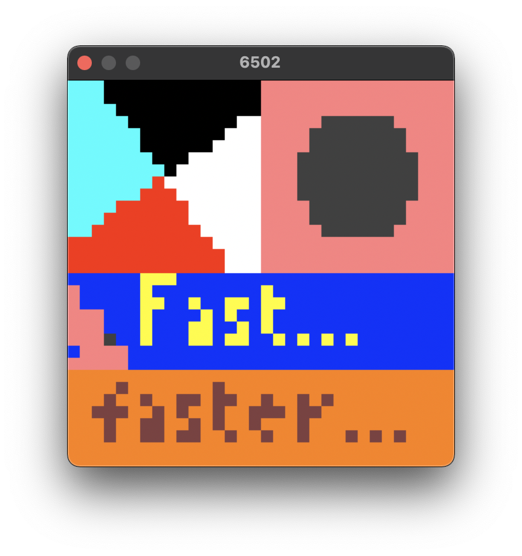

Portfolio
Quantum Tournament
A short game in Unity revolving around impossible spaces and portals. The tech demo was well-received, prompting me to write a tutorial about creating portals and AI in Unity.
6502js But C
A 6502 emulator written in plain C and X11/Cocoa/Win32. Compatible with 6502js, an educational emulator, while running a thousand times faster.
Invader Wars Battles
A short game in Unity, with over-the-top visual effects and a chaotic space free-for-all battlefield. I personally love how fun this is as a casual game, especially with all the explosions and bullets.